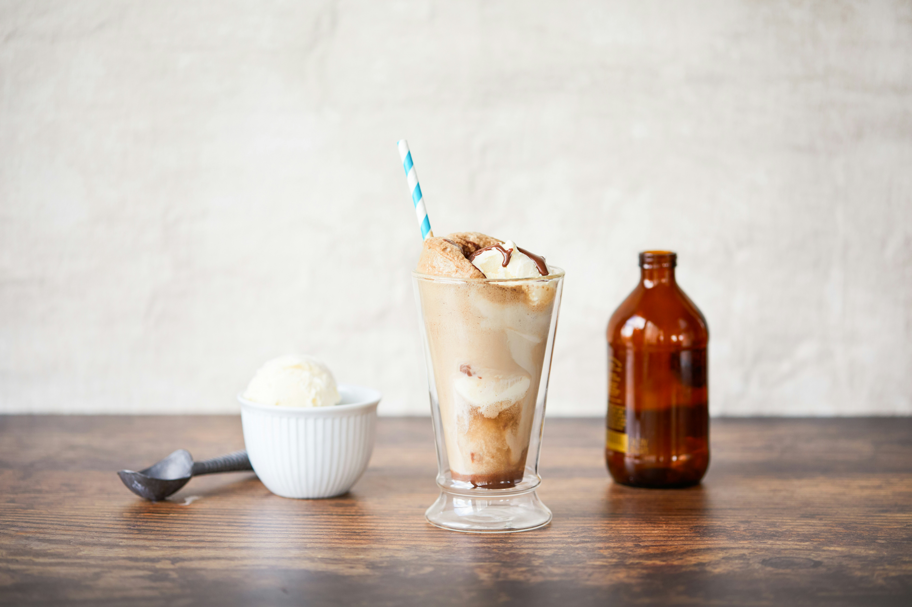

Home
Rootbeer Float Recipe

Description
This is a simple recipe for a rootbeer float by Elise Bauer at Simply Recipes.
Ingredients
- Vanilla ice cream
- Root beer
Steps
- Spoon a scoop or two of vanilla ice cream into a tall glass.
- Slowly pour root beer into the glass, allowing the foam to rise and then recede before adding more root beer.
- Serve with straws and spoons.